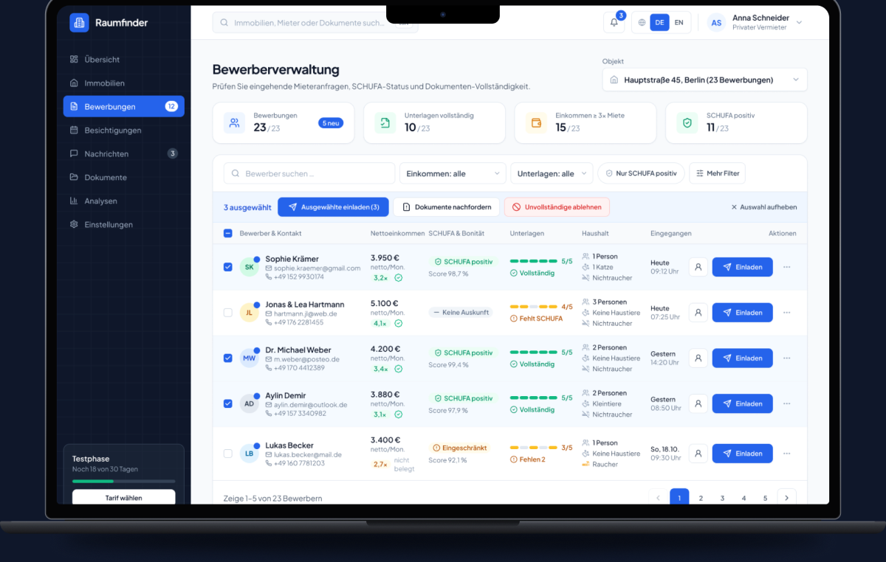
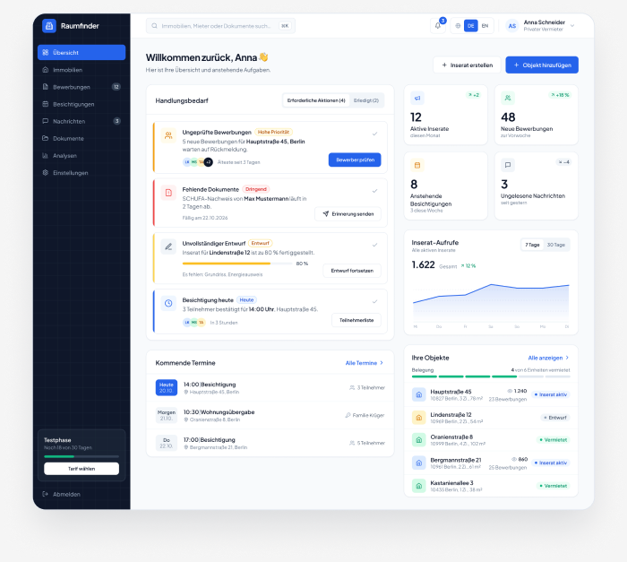
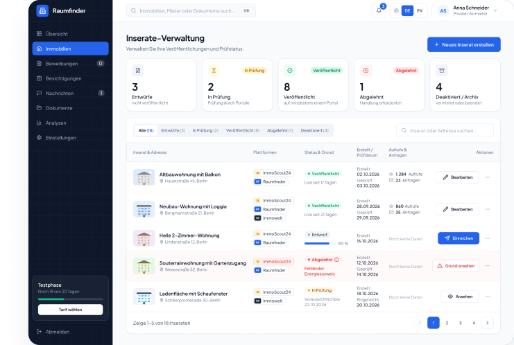
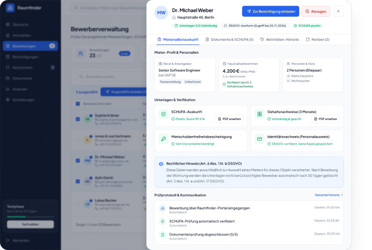
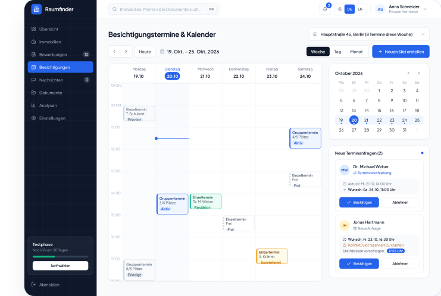
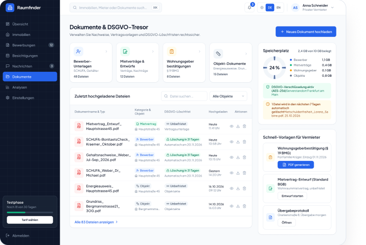
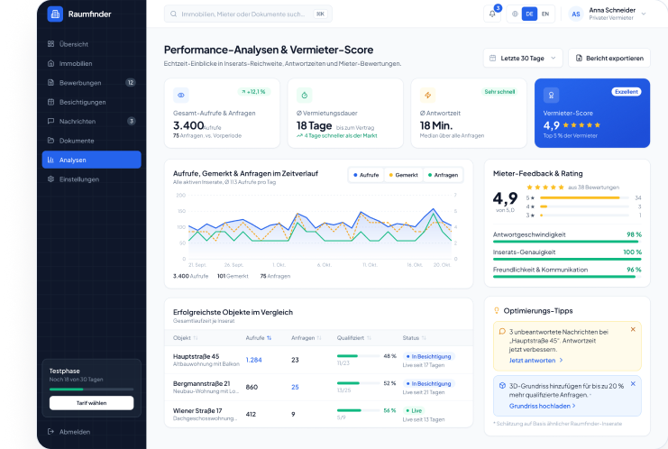

Raumfinder – Mietverwaltung, einfach digital.
Eine SaaS-Plattform, die private Vermieter vom ersten Inserat bis zum unterschriebenen Mietvertrag begleitet – übersichtlich, rechtssicher und DSGVO-konform.

Vermietung ist Fleißarbeit – und oft unübersichtlich.
Das Problem
Private Vermieter organisieren Bewerbungen, Besichtigungen und Unterlagen häufig über E-Mail, Tabellen und Papier. Informationen gehen verloren, Rückmeldungen dauern lange und sensible Daten werden nicht sauber gelöscht.
Das Ziel
Eine zentrale Plattform, die den gesamten Vermietungsprozess abbildet: vom Inserat über die Bewerberauswahl und Besichtigung bis zum Vertrag – mit klaren Abläufen und eingebautem Datenschutz.
Die Zielgruppe
Private Vermieter mit einer oder wenigen Wohnungen sowie kleine Hausverwaltungen, die professionell arbeiten möchten, ohne komplexe Branchensoftware einzuführen.
Vom Ablauf zum fertigen Interface
Ich habe zuerst den gesamten Vermietungsprozess strukturiert und daraus Screens, Zustände und eine einheitliche Komponentenbibliothek abgeleitet.
Analyse
Anforderungen privater Vermieter, rechtliche Rahmenbedingungen (DSGVO, BGB) und typische Abläufe.
Struktur
Informationsarchitektur, Navigation und User Flows für alle 18 Bereiche.
Design
High-Fidelity-Screens, Zustände und ein konsistentes Designsystem.
Prototyp
Klickbarer Prototyp mit 31 Zuständen und eine Präsentation im MacBook-Mockup.
Sechs Bereiche, ein durchgängiges Erlebnis

Alles Wichtige auf einen Blick
Das Dashboard bündelt offene Aufgaben, Kennzahlen und anstehende Termine. Vermieter sehen sofort, wo Handlungsbedarf besteht – ohne zwischen Tabellen und Postfächern zu wechseln.
- Priorisierte Aufgaben mit direkten Aktionen
- KPI-Karten zu Inseraten, Bewerbungen und Terminen
- Portfolio-Übersicht mit Belegungsquote

Inserate verwalten und veröffentlichen
Alle Inserate mit Status, Portalen und Reichweite in einer Tabelle. Abgelehnte Inserate zeigen den Grund und einen klaren Lösungsweg.
- Status-Tabs: Entwurf, In Prüfung, Veröffentlicht, Abgelehnt
- Portal-Badges für ImmoScout24, Immowelt und Raumfinder
- Hinweis auf fehlende Pflichtangaben (§ 87 GEG)

Das Bewerber-Dossier
Ein Seitenpanel fasst Selbstauskunft, Dokumente, Verlauf und Notizen zusammen. So lassen sich Bewerbungen schnell und nachvollziehbar prüfen.
- Einkommen, Haushalt und SCHUFA-Status kompakt
- Dokumentenstatus mit Prüfprotokoll
- DSGVO-Hinweis mit automatischer Löschfrist

Termine ohne Abstimmungschaos
Ein Wochenkalender für Einzel- und Gruppentermine. Offene Anfragen lassen sich direkt einem freien Zeitfenster zuordnen.
- Wochen-, Tages- und Monatsansicht
- Gruppenbesichtigungen mit Teilnehmerstatus
- Mini-Kalender und Anfragen-Widget

Der DSGVO-Dokumententresor
Verträge, Protokolle und Bewerberunterlagen liegen geordnet an einem Ort. Löschfristen werden sichtbar und rechtzeitig angekündigt.
- Kategorien für Verträge, Protokolle und Nachweise
- Tabelle mit anstehenden DSGVO-Löschungen
- Vorlagen-Generator für Standarddokumente

Entscheidungen auf Datenbasis
Reichweite, Antwortzeiten und Bewertungen der Mieter werden verständlich aufbereitet – mit konkreten Tipps zur Verbesserung.
- Zeitverlauf von Aufrufen, Merkungen und Anfragen
- Vergleich der erfolgreichsten Objekte
- Vermieter-Score mit Optimierungs-Tipps
Klar, ruhig und vertrauenswürdig
Eine reduzierte Farbpalette, eine gut lesbare Schrift und wiederverwendbare Komponenten sorgen für Konsistenz über alle Screens.
Farben
Typografie
Regular · Medium · SemiBold · Bold · ExtraBold
Was ich mitnehme
Das Projekt hat gezeigt, wie viel ein klares System bringt: Je früher Zustände, Komponenten und Regeln definiert sind, desto schneller und konsistenter entstehen neue Screens.
Konsistenz zahlt sich aus
Wiederkehrende Elemente wie Buttons, Badges und Karten habe ich als Komponenten angelegt und über alle Screens vereinheitlicht.
Datenschutz ist UX
DSGVO-Hinweise, Löschfristen und transparente Statusanzeigen schaffen Vertrauen – wenn sie verständlich und an der richtigen Stelle erscheinen.
Zustände mitdenken
Leere, fehlerhafte und abgeschlossene Zustände gehören von Anfang an dazu – sie machen aus Screens ein echtes Produkt.